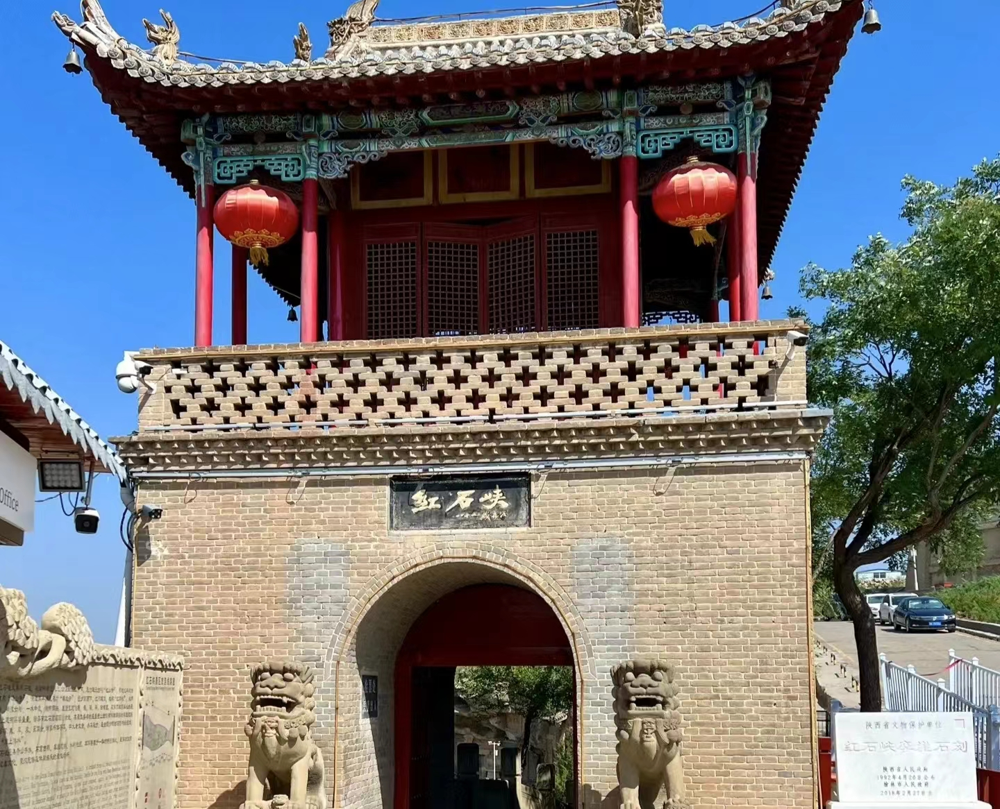

-
云台山
云台山风景区含红石峡、潭瀑峡、泉瀑峡、子房湖、茱萸峰、叠彩洞、猕猴谷、百家岩、万善寺等主要景点，景区因山势险峻，峰壑之间常...
-

红石峡
位于子房湖南，峡内夏日凉爽宜人，隆冬青苔卉莳草翠，故称温盘峪。它集泉瀑溪潭涧诸景于一谷，融雄险奇幽诸美于一体，被风景园林专家...
-
神农山
传说，炎帝神农氏在这里辨五谷、尝百草、设坛祭天，故而得名神农山，神农山是全球首批世界地质公园、世界自然基金组织A级优先保护区...
-
青山峡玻璃廊桥
国家重点风景名胜区、国家水利风景区、国家猕猴自然保护区、中国青少年科学考察探险基地、河南省最具魅力十佳风景区、河南省十大...